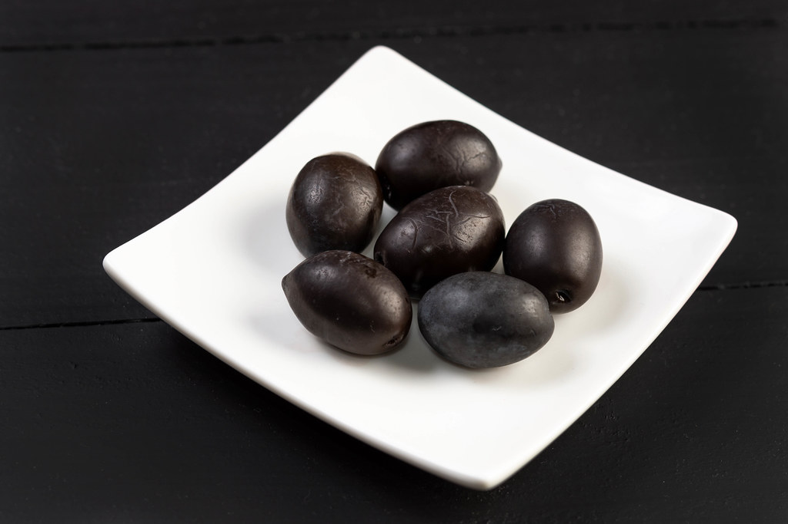
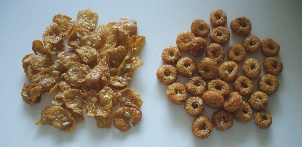

Sustenance

We never realize how strongly our diet affects us, until we switch
to a healthy one.
Tip: Eat small amounts of food frequently to spark energy.

Healthy foods
The following healthy foods give me strength:
- whole-grain rye bread
- dark chocolate
- black pepper
- coca cola
caution: Take in small sips. Large amounts can cause headaches and prevent sleep. - low-sugar juices
- brown rice
- spinach
- grapes
- black olives
- eggplants
- other vegetables
Foods to possibly avoid
- white bread
- non-whole-grain pasta
- sugary cereal
- milk chocolate
- fruit
-Sometimes the sugar in fruit can induce sleepiness. - juice with lots of sugar
- citrus fruits and juices
- anything high in sugar
Eating small amounts of healthy food frequently can be life-changing.